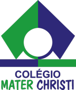
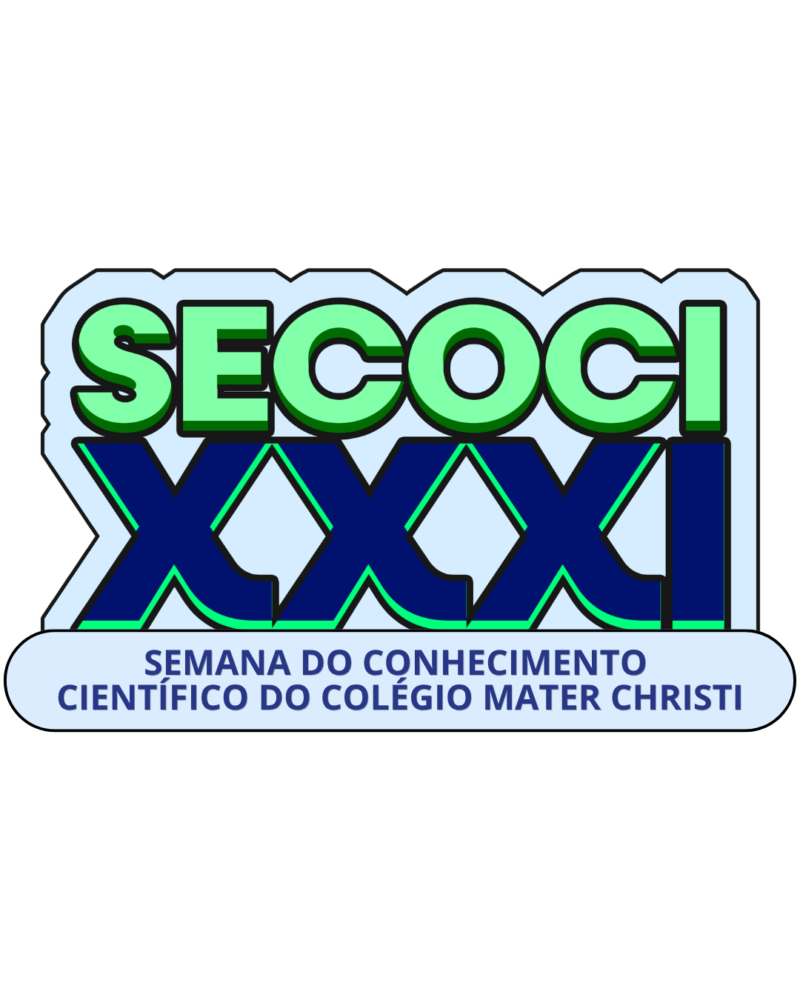
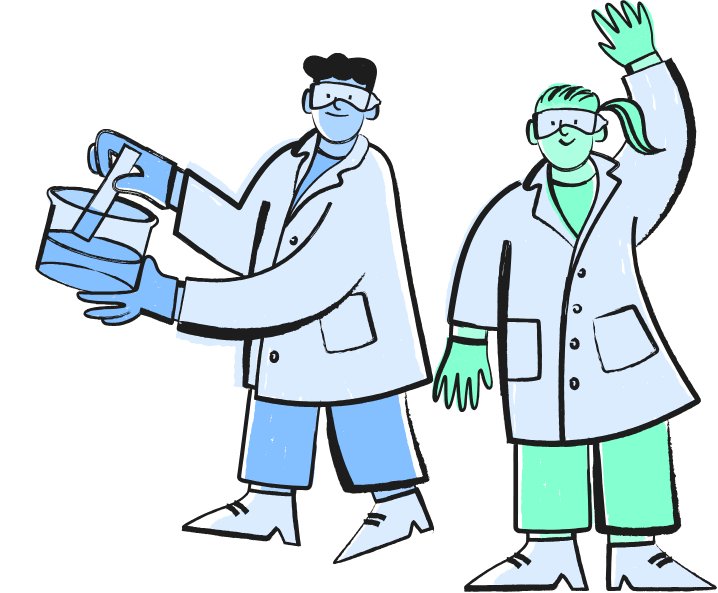

XXXI SECOCI • Colégio Mater Christi
Semana do Conhecimento Científico e Salão de Tecnologia e Inovação — 30 de junho a 04 de julho de 2026
Integrando a vivência escolar com os desafios da sociedade por meio da investigação científica
A SECOCI – Semana do Conhecimento Científico e Salão de Tecnologia e Inovação é o principal evento acadêmico do Colégio Mater Christi, chegando à sua 31ª edição em 2026.
Durante uma semana, alunos do 1º ano do Ensino Fundamental à 2ª série do Ensino Médio apresentam projetos de pesquisa que conectam o saber escolar com a realidade, desenvolvendo competências investigativas, pensamento crítico e trabalho colaborativo.
São 174 projetos inscritos distribuídos em quatro grandes áreas do conhecimento, envolvendo centenas de estudantes e orientadores comprometidos com a formação integral.

Confira a agenda completa da XXXI SECOCI — 30 de junho a 04 de julho
Exposição pedagógica e atividades práticas dos alunos da Educação Infantil do Colégio Mater Christi.
Exposição dos projetos e pesquisas desenvolvidos pelos alunos do 1º ao 5º ano do Ensino Fundamental.
Ações de imunização e conscientização sobre saúde integrada à feira de ciências.
Apresentação e avaliação dos projetos científicos dos estudantes do 6º ao 9º ano e Ensino Médio.
Disponibilização de vacinas e orientação de saúde para toda a comunidade escolar.
Premiação oficial dos projetos de destaque, reconhecimento dos alunos pesquisadores e orientadores.
Informações essenciais para participantes, orientadores e visitantes
Para a segurança de todos os participantes, os seguintes itens são estritamente proibidos nos estandes:
Acesse o documento oficial com todas as normas, critérios de avaliação e orientações para participação na XXXI SECOCI.
Baixar Edital em PDFExplore os 174 projetos inscritos na XXXI SECOCI
Carregando projetos...
Acompanhe as fotos atualizadas da edição de hoje da nossa Semana de Conhecimento Científico e Salão de Inovação!